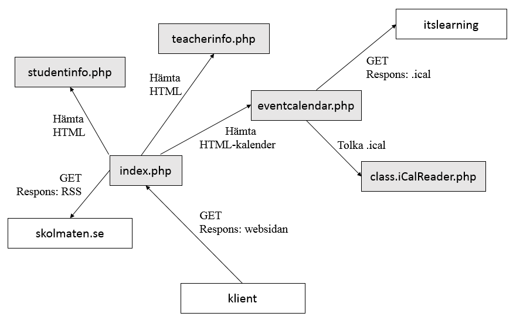

Teknikprgrammets Informationssida
1 Problemformulering
Teknikprogrammet behöver ett sätt att sammanställa viktiga datum för inlämnningar och prov.
2 Metod
En agil utvecklingsmetod skall användas. Inga planeringsdokument skall produceras. Utvecklingen skall ske iterativt och kravspecifikationen kommer att förändras under arbetets gång.
3 Analys
En webbsida som i huvudsak kan visas på en tv-skärm i skolan, men även på persondatorer, skall utvecklas. Den skall visa en kalender med viktiga datum för teknikprogrammets klasser. Lärare skall kunna föra in händelser i kalendern via Kunskapsförbundets itslearning-sida.
Dagens lunch skall även visas.
3.1 Kravspecifikation
3.1.1 Avändargränssnitt
- Inmatningen skall ske via Kunskapförbundets ItsLearning-sida.
- Teknikprogrammets lärare skall kunna mata in händelser, vilken klass händelsen gäller samt datum och tid.
- Det skall finnas information för lärare om hur sidan används.
- Information om hur sidan är konstruerad för elever som vill fortsätta utveckla sidan skall finnas.
3.1.2 Mjukvarugränssnitt
- Kalenderdatan skall finnas lagrad i en databas.
- Rå kalenderdata skall kunna hämtas ur databasen med ett mjukvarugränssnitt.
4 Design/implementation
4.1 Arkitektur
Projektet består att ett flertal komponenter som samverkar.
- Den del av sidan som hanterar http-frågor befinner sig i index.php
- Kalendern hanteras av eventcalendar.php. Till denna finns det även tillhörande CSS och JavaScript.
- Informationssidorna för lärare och elever finns vardera PHP-filer.
Nedan följer en schematisk bild över systemet. 
4.2 Kalendern
Lärare matar in händelserna i den inbyggda händelse-funktionen i itslearning. Alla händelser i alla kurser som ett användarkonto är medlem i hämtas sedan via itslearnings kalenderfunktion. Detta sker i ical-format1.
För att tolka innehållet i .ical-filer används en modul av MartinThoma2. Med hjälp av modulen extraheras start- och sluttid för händelser samt texten de innehåller och vilken kurs de tillhör. Denna information infogas i databasen.
4.2.1 Databas
En MySQL-databas används för att mellanlagra den data som hämtas från itslearning. Databasens innehåll är tillgängligt genom mjukvarugränssnittet.
Databasen innhåller följande tabeller:
- classes
Namn Typ Kommentar name varchar Klassnamnet, primärnyckel color char Färgen, standardvärde 7a26a8 - events
Namn Typ Kommentar id varchar Primärnyckel start_time datetime Händelsens starttid end_time datetime Händelsens slutttid course varchar Kursnamnet text varchar Händelsebeskrivningen - event_classes
Namn Typ Kommentar name varchar Klassnamnet, primärnyckel color char Färgen, standardvärde 7a26a8 event_classes-tabellen används för relationen mellan classes och events. En händelse kan ha många klasser och en klass kan ha många händelser; de har en många-till-många-relation.
4.2.2 Inmatningsformat
Den inmatade texten i händelsebeskrivningen genomsöks efter de klassnamn som finns i databasen, utan hänsyn till skriftläge (versaler/gemener). Även kursnamnet söks igenom på detta sätt.
Ett exempel på en händelsebeskrivning:
Prov differentialekvationer för TE3a och TE3b. Avsnitt 5 ingår inte.
Om inga klassnamn hittas används en standardfärg i kalendern och händelsen dyker ändast upp under "Hela Teknikprogrammet"..
5 Testning
Några subjektivt utvalda intressanta tester som har utförts:
- XSS från itslearnig
Testet bekräftade att sidan är känslig för XSS.
- Flera klasser i en händelse
Händelsen visades korrekt med ränder.
- Olika skärmstorlekar
Sidan är i huvudsak responsiv för stora skärmar.
- Olika webbläsare
Firefox gav en annan höjd på sidan i förhållande till fönsterstorleken.
- M
6 Resultat
7 Diskussion
7.1 Säkerhet
7.1.1 XSS
Flera komponenter är känsliga för XSS (Cross Site Scripting5). Information inmatad av lärare på itslearnig kan vara skadlig. Viss HTML (och i förlängningen JavaScript) som matas in kommer att tolkas på klientsidan då ingen tvättning sker bortsett från det som automatiskt sker via .ical-formatet (till exempel undanflys semikolon). Liknande säkerhetsrikser finns för andra inmatningsvägar från itslearning som kursnamn.
7.1.2 SQL-injektion
Risken för SQL-injektion är låg då endast information inmatad av lärare infogas i databasen. Vidare används PDO (PHP Data Objects6) med variabelbindning för att minimera risken.
7.1.3 Övrigt
Ingen inloggningsfunktion finns. Således krävs till exempel inte lösenordskryptering, sessionshantering och rättighetsfördelning. Den data som alla användare har möjlighet att skicka till servern är sker via HTTP GET/POST. De värden som skickas med, används endast för att anpassa innehållet till användaren och kan således inte skada andra användare (via XSS). Det finns en möjlighet att vissa värden skulle kunna orsaka ett internt serverfel. Vidare används ett värde för att hämta data ur databasen, denna bör tvättas till en numerisk datatyp för att försäkra att SQL-injektion inte är möjlig.